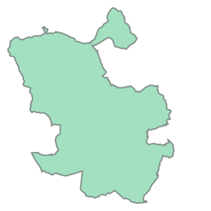
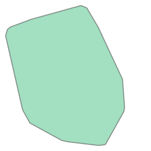

import geopandas as gpd
from cityseer.tools import io, plotOSM network from a boundary file
Use a custom boundary file to create a networkx graph from OSM.
If you have a boundary file in a GeoPackage, shapefile, or similar format, then you can load this file and use it as the boundary for creating a network from OSM.
Use geopandas to load the boundary file. Check that your file path is correct!
bounds_gpd = gpd.read_file("data/madrid_bounds/madrid_bounds.gpkg")
bounds_gpd| CODDIS | NOMDIS | COD_BAR | NOMBRE | Shape_Leng | COD_DIS_TX | BARRIO_MAY | COD_DISBAR | NUM_BAR | BARRIO_MT | COD_DISB | geometry | |
|---|---|---|---|---|---|---|---|---|---|---|---|---|
| 0 | 1 | Centro | 011 | Palacio | 0.0 | 01 | PALACIO | 11 | 1 | PALACIO | 1-1 | POLYGON ((441182.611 4463570.002, 441178.708 4... |
Extract the EPSG code from the boundary file.
epsg_code = bounds_gpd.crs.to_epsg()
print(epsg_code)
print(bounds_gpd.crs.is_projected)25830
TrueIf the geometry is not in a projected coordinate system, reproject it to a locally projected coordinate system before doing buffering or simplification. This can be done with the built-in to_crs method in geopandas. The EPSG code for the UTM zone can be found at epsg.io. For example, if your boundary is in the UTM zone 30N, you can use code 32630.
For the currently opened file, the boundary is already in a projected coordinate system, so we can skip this step. When working with a file that does need to reprojected, then you can use the following code to project your CRS to a given EPSG code.
# shown as example - unnecessary step for current dataset
bounds_gpd = bounds_gpd.to_crs(epsg=25830)
print(epsg_code)
print(bounds_gpd.crs.is_projected)25830
TrueConvert the GeoDataFrame into a Polygon using the geopandas union_all method. This will create a single unified shapely geometry.
bounds_geom = bounds_gpd.union_all()
bounds_geom
If the geometries are complex, then the OSM data request may fail due to URL length limitations (because each coordinate has to be passed in the URL). To avoid this, you can use the convex_hull or else the simplify method to reduce the number of points in the geometry.
bounds_geom_simpl = bounds_geom.convex_hull
bounds_geom_simplIt is best practise to buffer the geometry by an amount matching the farthest distance used for centrality or accessibility calculations, which prevents edge roll-off effects.
bounds_geom_buff = bounds_geom_simpl.buffer(100)
bounds_geom_buff
The shapely Polygon can now be used as before to download and prepare an OSM graph.
# simplification turned off for this example
G = io.osm_graph_from_poly(
bounds_geom_buff,
poly_crs_code=epsg_code,
simplify=False,
)
print(G)WARNING:cityseer.tools.io:Merging node 12288331228 into 256149889 due to identical x, y coords.
WARNING:cityseer.tools.io:Merging node 12119257161 into 12119257160 due to identical x, y coords.
WARNING:cityseer.tools.io:Merging node 12290337809 into 2334349237 due to identical x, y coords.
WARNING:cityseer.tools.io:Unable to parse level info: t
WARNING:cityseer.tools.io:Unable to parse level info: t
WARNING:cityseer.tools.io:Unable to parse level info: t
WARNING:cityseer.tools.io:Unable to parse level info: t
WARNING:cityseer.tools.io:Unable to parse level info: t
WARNING:cityseer.tools.io:Unable to parse level info: 1-2
INFO:cityseer.tools.graphs:Generating interpolated edge geometries.
100%|██████████| 771636/771636 [00:15<00:00, 49490.12it/s]
INFO:cityseer.tools.io:Converting networkX graph to CRS code 32630.
INFO:cityseer.tools.io:Processing node x, y coordinates.
100%|██████████| 692056/692056 [00:00<00:00, 1122310.89it/s]
INFO:cityseer.tools.io:Processing edge geom coordinates, if present.
100%|██████████| 771636/771636 [00:40<00:00, 18932.66it/s]
INFO:cityseer.tools.graphs:Removing filler nodes.
100%|██████████| 692056/692056 [00:32<00:00, 21315.84it/s]MultiGraph with 217449 nodes and 297029 edgesSetting the x_lim and y_lim extents will effectively zoom-in so that the results of the query can be seen more clearly.
plot.plot_nx(
G,
plot_geoms=True,
x_lim=(439500, 439500 + 2000),
y_lim=(4473500, 4473500 + 2000),
)INFO:cityseer.tools.plot:Preparing graph nodes
INFO:cityseer.tools.plot:Preparing graph edges
100%|██████████| 297029/297029 [00:05<00:00, 53590.98it/s]